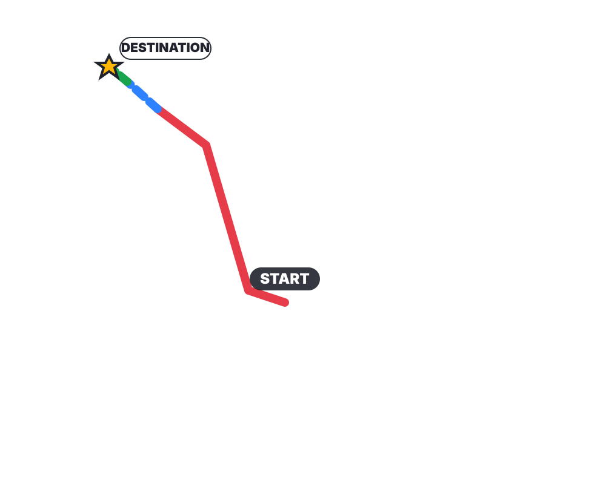

Opening phases

Pokémon Violet challenge types, teams, counters and recommended routes
Challenge 17 · Titan Pokémon
A multi-stage encounter with different weaknesses in each phase.
From Mesagoza using the abilities unlocked before this challenge


The map is a stylized schematic for route planning rather than a pixel-exact in-game map.
Fixed boss encounter Pokémon